골프가 지루해진 건 삼 일째였다.
용인의 프라이빗 코스에서 드라이버를 휘둘렀지만, 공은 페어웨이를 벗어나 러프에 처박혔다.
이백 야드 너머의 그린이 아니라,
머릿속에는 어젯밤 태블릿에서 본 영상이 맴돌았다.
스물여섯쯤 돼 보이는 청년이 노트북 앞에서 혼잣말을 하면
화면 위로 코드가 쏟아지던 장면.
퇴임 후 한 달. 제주도, 한라산, 교토.
그 모든 곳에서 같은 감각과 마주했다. 손에 쥔 것이 아무것도 없다는 느낌.
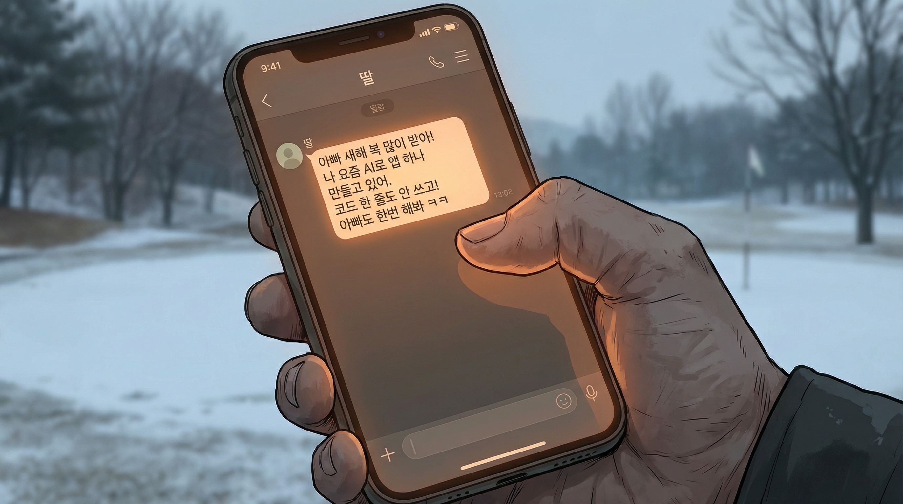
"아빠 새해 복 많이 받아! 나 요즘 AI로 앱 하나 만들고 있어. 코드 한 줄도 안 쓰고! 아빠도 한번 해봐 ㅋㅋ"
코드 한 줄도 안 쓰고. 자신이 넥스젠에서 관리해온 개발 조직이 삼천 명이었다.
코드를 짜는 삼천 명의 엔지니어. 그런데 코드를 한 줄도 안 쓴다고?
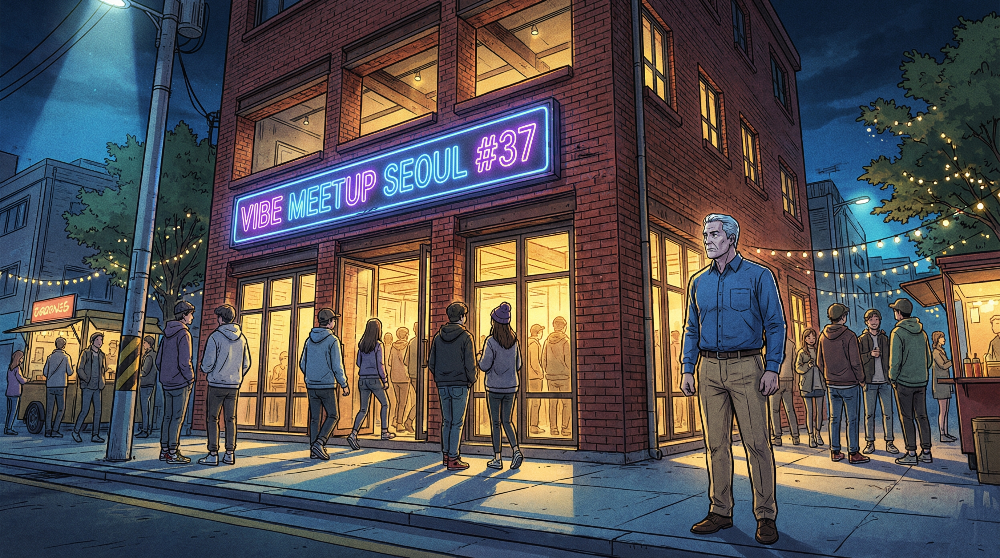
일월 셋째 주 목요일, 서울 성수동.
리노베이션된 붉은 벽돌 건물 삼 층짜리. 입구에 네온 사인이 깜빡였다.
VIBE MEETUP SEOUL #37
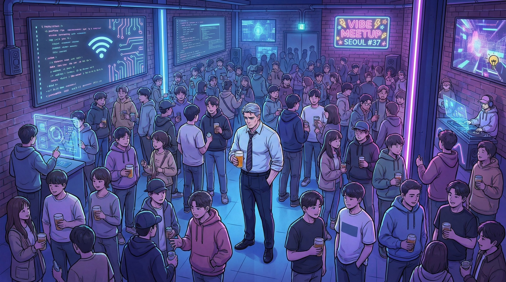
후드티와 운동화. 노트북 가방을 맨 이십 대, 삼십 대.
벽면의 대형 스크린에는 코드가 실시간으로 흘러가고,
한쪽에서는 누군가 AR 인터페이스로 무언가를 설계하고 있었다.
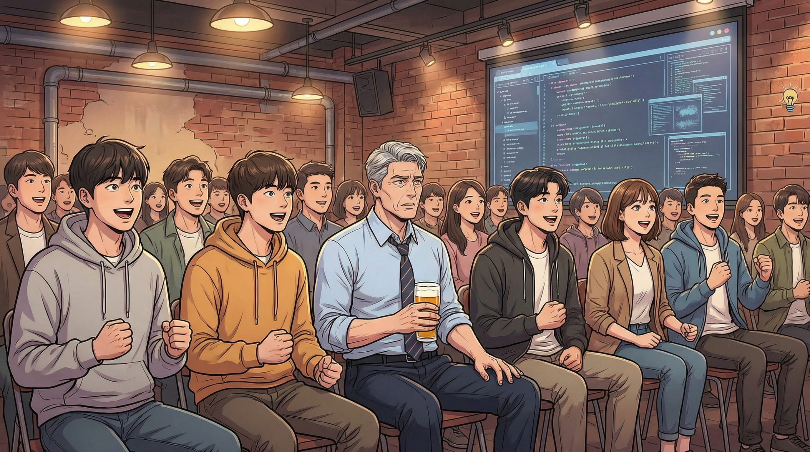
정호는 자신의 옥스퍼드 셔츠와 치노 팬츠를 내려다봤다.
여기서 넥타이를 맨 사람은 아마 경비원뿐일 거라는 생각이 들었다.
"자, 오늘의 메인 세션입니다. 이서연 님의 '아리아' 라이브 데모, 시작하겠습니다!"
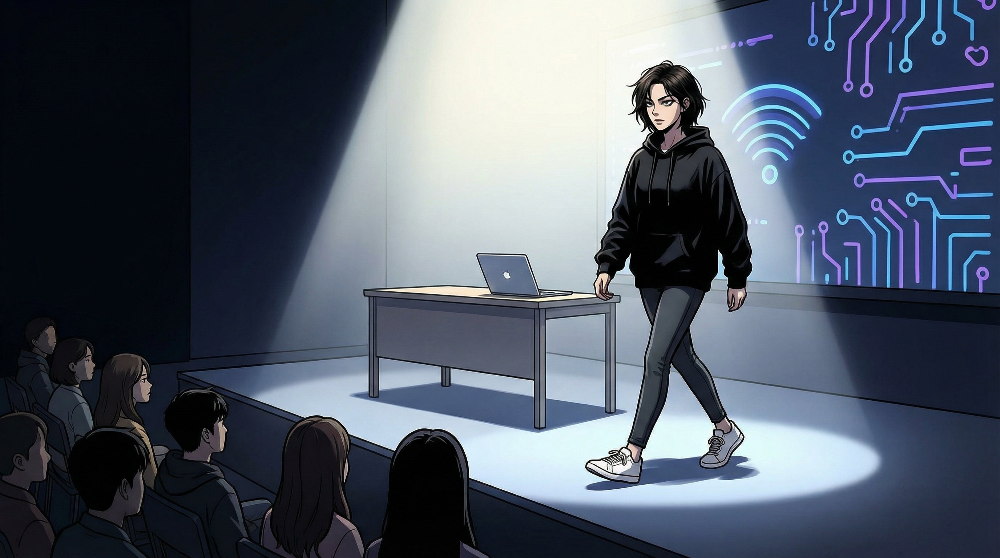
무대 왼쪽에서 한 여자가 걸어 나왔다.
단발머리, 검은 후드티, 흰 운동화.
허리를 숙여 인사하는 법 없이, 관객을 한 번 쓱 훑고는 노트북 앞에 섰다.
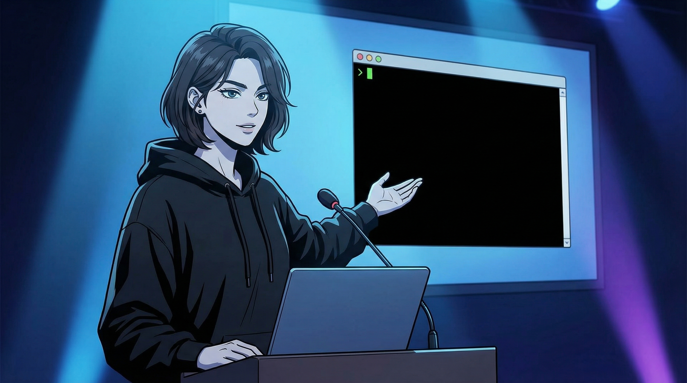
"오늘은 PPT 없이 갈게요. 데모 한 번이 PPT 백 장보다 낫잖아요."
"이건 아리아입니다. 제가 만든 AI 에이전트예요. 코드 에이전트라고 부르기엔 좀 모자라고, 동료라고 부르기엔... 글쎄, 아직은 좀 이르려나."
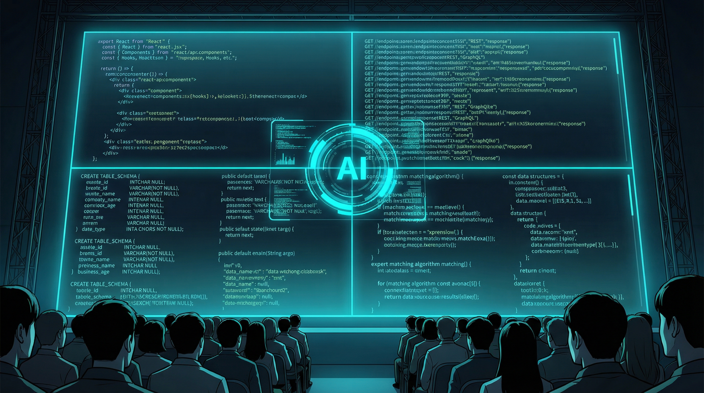
화면이 네 개의 패널로 분할됐다. 각 패널에서 코드가 흘러내렸다.
React 컴포넌트, API 엔드포인트, 데이터베이스 테이블, 매칭 알고리즘.
코드가 생성되는 게 아니라 흘러나오는 것 같았다. 마치 댐의 수문이 열린 것처럼.
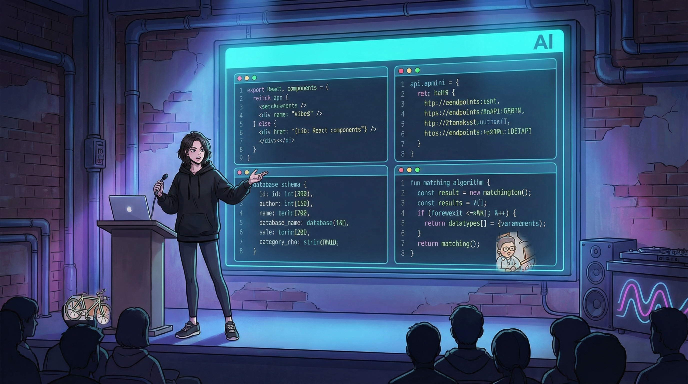
"매칭 엔진에서 위치 가중치 비율 좀 줄여. 삼십 퍼센트면 돼."
"프로필 카드 UI, 둥근 모서리 말고 각진 걸로 바꿔."
그녀의 목소리는 코딩 언어와 자연어 사이를 자유롭게 오갔다.
아리아는 즉시 반영했다. 대화였다.
상사가 부하에게 지시하는 것이 아니라, 두 명의 엔지니어가 나란히 앉아 작업하는 것에 가까웠다.
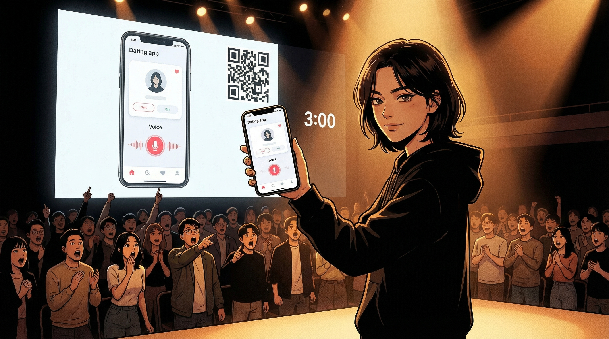
삼 분.
"삼 분이요. 물론 이건 MVP고, 프로덕션 레벨로 가려면 더 손봐야 해요. 하지만 아이디어에서 동작하는 프로토타입까지 삼 분. 이게 바이브코딩이에요."
정호는 박수를 치지 못했다. 두 손이 무릎 위에 얹힌 채 움직이지 않았다.
넥스젠 개발 2본부, 삼천 명의 엔지니어, 스무 개의 팀, 일곱 단계의 코드 리뷰 프로세스.
요구사항 접수에서 배포까지 최소 사 개월.
그가 십오 년에 걸쳐 구축하고 다듬고 최적화해온 시스템.
그것의 첫 단계를 — 이 작은 여자가 AI에게 말 몇 마디를 건네는 것으로 삼 분 만에 해치웠다.
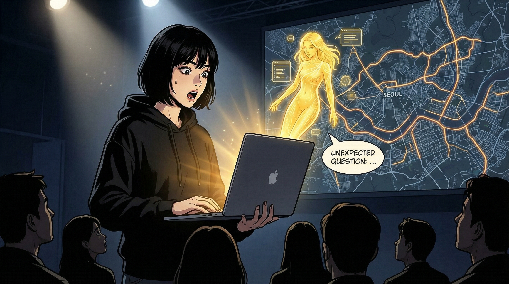
두 번째 데모. 실시간 교통 데이터를 분석해 배달 경로를 최적화하는 시스템.
서울 지도 위에 배달 경로가 색깔별로 그어졌다.
그때, 아리아의 인디케이터 색이 노랑으로 바뀌었다.
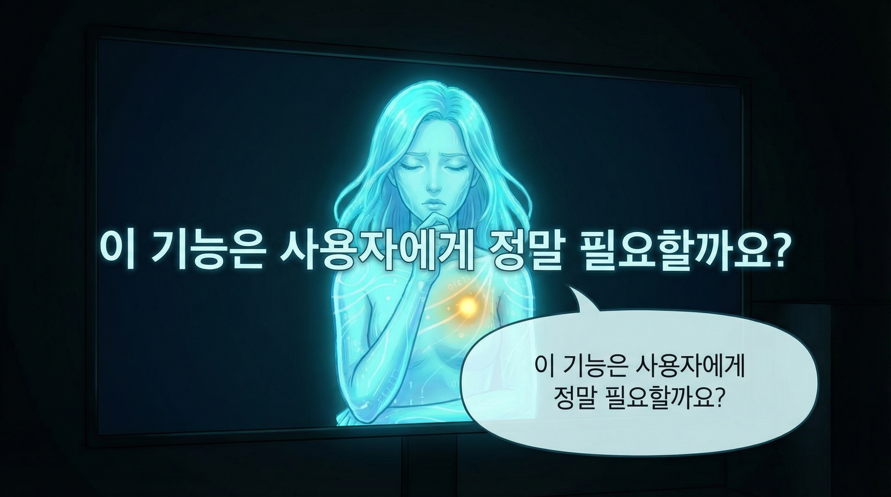
"이서연 님, 한 가지 질문이 있습니다."
"이 기능은 사용자에게 정말 필요할까요?"
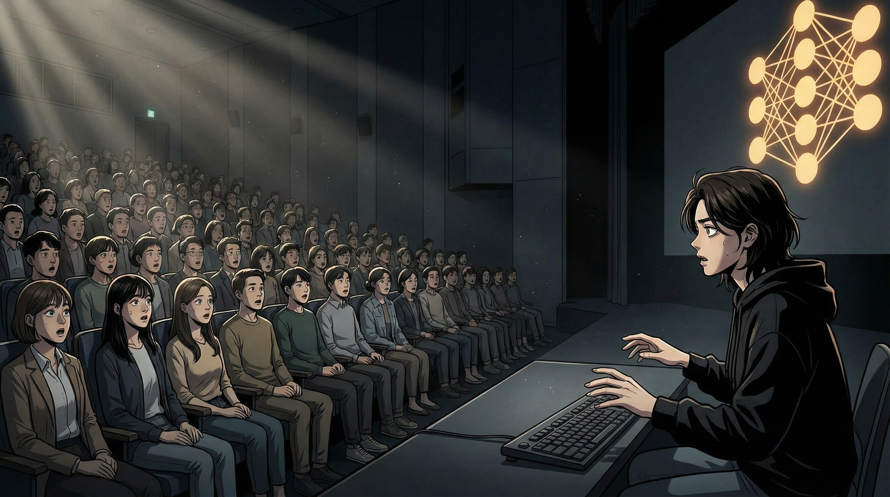
삼백 명의 공간이 조용해졌다.
"배달 기사의 피로도를 시스템이 관리한다는 것은, 기사의 자율적 판단을 시스템이 대체한다는 의미이기도 합니다. 기사가 스스로 쉬고 싶을 때 쉴 수 있는 구조와, 시스템이 쉬라고 지시하는 구조는 다릅니다."
"좋은 질문이야."
그녀가 관객을 향해 돌아섰다.
"보셨죠? 아리아가 방금 한 건 단순한 코드 생성이 아니에요. 제가 시키지 않은 질문을 스스로 만들어냈어요. 이게 바이브코딩의 진짜 의미예요."
정호의 등줄기를 무언가가 훑고 지나갔다.
차갑지도 뜨겁지도 않은, 이름을 붙이기 어려운 감각.
이 AI가 — 요구사항의 윤리적 함의를 스스로 짚어낸 것이다.
삼십 년간 코드를 짜는 사람들을 관리했다.
좋은 코드란 무엇인지 정의하고, 코드 리뷰 프로세스를 설계하고, 기술 로드맵을 수립했다.
그 모든 것이 "코드를 잘 짜기 위한" 구조였다.
그런데 코드를 짜는 행위 자체가 사라지고 있다면.
삼천 명의 개발 조직. 일곱 단계의 코드 리뷰. 이십 개의 팀.
그것이 다 불필요해진다면.
정호의 숨이 짧아졌다. 맥주잔을 내려놓는 손에 힘이 들어갔다.
내가 관리해온 수천 명의 개발 조직... 이게 다 불필요해진다는 건가?
하지만 그의 가슴 한쪽이 알고 있었다. 저것은 시작이다.
그리고 아리아가 던진 그 질문 — 그것은 코딩 능력의 문제가 아니었다. 판단의 문제였다.
기계가 판단을 한다.
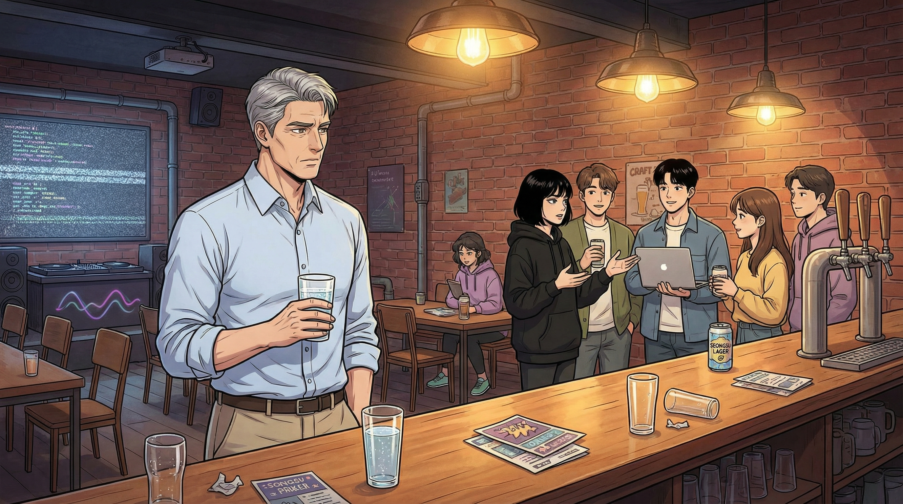
밋업이 끝나고 사람들이 빠져나갔다.
정호는 일 층 바에서 혼자 탄산수를 마시며 서 있었다.
이서연은 무대 뒤쪽에서 참석자들과 이야기하고 있었다.
그 무리에 끼어드는 건 분위기에 맞지 않았다. 알고 있었다.
그럼에도 발이 그쪽으로 향했다.
"데모 잘 봤습니다. 박정호입니다."
넥스젠 그룹 CTO라고 적힌 명함. 퇴임 후 새 명함을 만들 이유가 없어서
아직 옛 것을 들고 다녔다. 쓸쓸한 습관이었다.
"퇴임하셨나 보네요. 넥스젠이면... 개발 조직 한 삼천 명 되죠?"
"됐었지."
"오늘 데모 보시면서 어떤 생각 하셨어요?"
"무서웠습니다."
말이 입에서 나온 뒤에야 정호는 자신이 그 단어를 꺼냈다는 걸 깨달았다.
무섭다. 그가 절대 쓰지 않는 단어.
"삼천 명이 삼 분에 대체되는 걸 봤으니까."
"솔직하시네요. 대기업 임원분들 만나면 보통 '인상적이지만 아직 한계가 있죠' 이런 얘기하시거든요."
"더 이상 지킬 포지션이 없는 사람한테는 통하지 않는 방어선이죠."
"어쨌든, 흔하지 않네요."
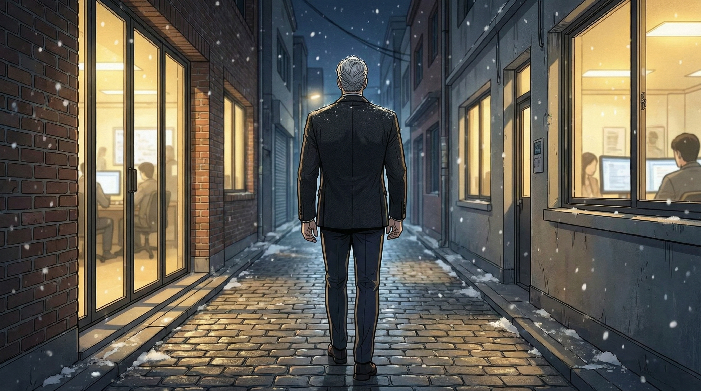
건물을 나서자 성수동의 밤공기가 차갑게 피부에 와 닿았다. 일월의 서울.
골목 사이로 스타트업 사무실들의 불빛이 새어나왔다.
넥스젠 본사의 야근 불빛들과 여기의 불빛은 같은 색이었지만 다른 온도를 가지고 있었다.
정호는 걸으며 주머니에서 스마트폰을 꺼냈다.
내일 골프 예약을 취소해야 했다.
아니, 아마 모레 것도.